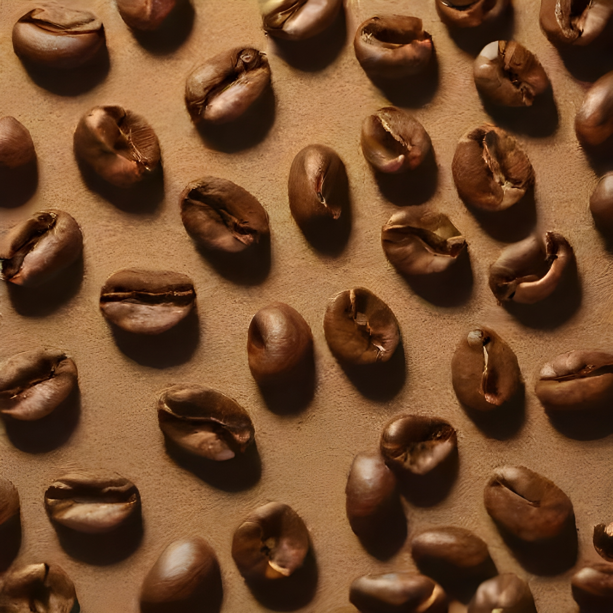

Our History
Venusian Beans was founded in 2020 with the mission to bring the finest coffee from Venus to Earth. Our journey began with a small team of passionate coffee enthusiasts who believed in the potential of interplanetary trade. Over the years, we have grown into a renowned brand known for our unique and high-quality coffee beans.
In 2021, we opened our first store in Gatineau, QC, and quickly expanded to multiple locations across Canada. Our commitment to sustainability and ethical sourcing has been at the core of our operations, ensuring that our coffee not only tastes great but also supports the communities involved in its production.
Today, Venusian Beans continues to innovate and lead the industry with our cutting-edge roasting techniques and dedication to customer satisfaction. We are proud to share our story and our coffee with the world.
Our First Coffee Cup

On a chilly morning in 2020, we sold our very first cup of Venusian coffee. It marked the beginning of an incredible journey, bringing the unique flavors of Venus to Earth. This momentous occasion is a testament to our dedication and passion for coffee.
Sustainable Sourcing
We are committed to sustainable and ethical sourcing. Our coffee not only tastes great but also supports the communities involved in its production.